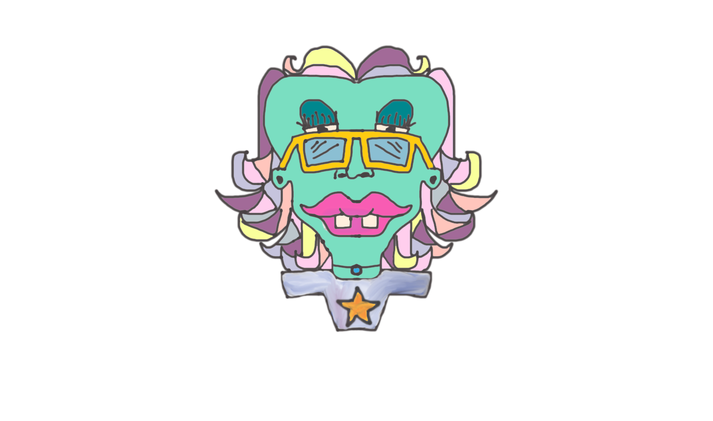

hi.

Hello. Welcome to my online gallery. Here I have a bunch of my digital art.
I don't know much else to say about this because I'm not very used to showng the stuff I make [I only had the courage to do it
hi.

after I started programming and began to have real people using things I had built].
Most of these are extremely loud and colorful because
hi.
they were all made during periods when i felt extremely sad and gray/colorless.
If you enjoy looking at my art, you can find it on redbubble for purchase!
hi.

If you're wondering how made these - the background photos are picture I have taken
in all the places I have visited. These have been altered to result in the bright and highly saturated versions of them
hi.
The faces in the center of each background was hand drawn by me on my MacBook air using the app AutoDesk SketchBook
Many of these faces started out being based on real faces, but because I suck at drawing real humans, I turned them into my
hi.
army of strange little creatures. I love each one of them like my brain-children.
Please do not steal them! If you do, please credit me.